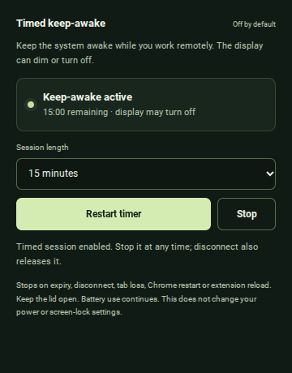

Coordinate in Linux
Edit source and review results on Samsung. Use a pinned SSH configuration to reach the worker.
Field notes / 002 · Personal engineering project
Make the hardware already on hand useful. A Samsung and a Lenovo, each with 4GB of RAM, now work together for coding, browser checks, and remote tests.
Built by Bryan with Codex assistance · Verified November 15, 2026
Architecture illustration · No live device information
01 / Start with the constraints
ChromeOS, its Linux environment, and the browser are different layers. The project gives each layer an explicit connection.
Codex could edit files and run tools in Linux, but that did not automatically give it control of native Chrome. A second working Chromebook introduced another problem: Linux SSH worked locally, while the tested path through ChromeOS’s LAN forwarding refused connections.
The solution combines an owner-connected Chrome extension, a small Python bridge, and key-only SSH over a private Tailscale link. Samsung coordinates; Lenovo runs ordinary tests and browser checks. Both keep their own working copies and resources.
Edit source and review results on Samsung. Use a pinned SSH configuration to reach the worker.
The owner selects a tab or opts into a persistent work tab. Disconnect pauses browser recovery.
Run the same source tests on the second machine. Inspect the actual page after browser input.
02 / The bug that made the project better
A background-tab click returned success, but a checkbox stayed unchecked. Making the tab visible made the click work.
The original bridge accepted the input command. The page told a different story. That observation led to visibility checks before click, typing, and key input, plus an explicit command to focus the already-connected tab.
Version 0.3.1 refuses hidden input. If visibility changes during a click, it reports uncertainty so the caller inspects the page before retrying. Focus never chooses an unrelated tab or resumes a deliberate disconnect.
Read the fix and regression tests ↗Local state simulation of the fix. This does not control Chrome, connect a device, or send any data.
Try a click while hidden, then focus the tab and try again.
03 / Available when you need it
A timed, owner-enabled wake session replaces the need to leave the display lit throughout remote work.
Choose 1, 15, 30 or 60 minutes in the extension popup. Chrome requests the optional power permission when you enable the feature. A countdown shows what remains; Stop releases it immediately.
The bridge asks to keep the system awake, while allowing the display to dim or turn off. It leaves ChromeOS power preferences, screen locking and lid behavior alone. Disconnect, tab loss and Chrome restart also end the request.
The Linux tools can observe the session, but they cannot enable or extend it. The owner stays in control of when remote work should keep the machine awake.
Verified on Lenovo: a real one-minute timer expired automatically. In a separate 15-minute battery session with native idle sleep enabled, the owner confirmed the display was off while sampled SSH and browser connections remained healthy; the wake request then expired. This is one-device evidence, not a battery-life or closed-lid guarantee.
Read the behavior and limits ↗
04 / Evidence, with boundaries
Results from these two physical Chromebooks. A passing test is evidence for the case it covers.
| Check | Observed result | Boundary |
|---|---|---|
| Browser bridge v0.4.0 | 27 Python + 44 JavaScript checks passed on Lenovo. | Other devices and independent security review remain open. |
| Actual Chrome input | Hidden input refused; same-tab focus and visible form interactions passed. | Minimized-window behavior was not physically tested. |
| Timed keep-awake | Live one-minute expiry and a 15-minute battery screen-off session passed on Lenovo. | Owner visual report plus sampled connections; no closed-lid, critical-battery or managed-policy claim. |
| Remote work | Pinned-key SSH, file transfers, and worker test runs passed. | No shared RAM, pooled model allowance, or throughput claim. |
| Lid-close / reopen | Same Lenovo tab, fresh heartbeat, SSH and page snapshot worked without reconnect. | One lid cycle; hardware suspend depth was not measured. |
| Recovery | A bridge-service restart recovered the same work tab. | Full Samsung reboot recovery used manual host startup; the new paired route has not had a full reboot test. |
The reusable workbench helpers also pass 17 Python checks. Test counts cover different components; they are not performance scores.
05 / Deliberate choices
Userspace Tailscale avoids requiring a kernel tunnel device. SSH checks the worker’s independently supplied host-key fingerprint before the first login.
The bridge targets the connected tab and honors Disconnect. Chrome’s debugger permission is powerful; the limited tool surface is an application rule, not a narrower Chrome permission.
Public packages contain source and examples. Pairing tokens, private keys, browser sessions, and private device endpoints stay out of GitHub.
An optional touch/input helper is a separate, privileged host installation. Its generalized installer remains unverified on another device; it is not needed for the browser bridge.
06 / Reproduce it, inspect it, improve it
Private transport setup, fingerprint pinning, health checks, recovery instructions, and worker test workflow.
Read the repositoryTHE BROWSER LAYER ↗Owner-connected extension, Python service, CLI and MCP tools, with the visibility fix and its regression tests.
Explore the bridgeNext for this setup: repeated recovery checks and better cross-device validation. The same worker can test future portfolio projects, including the separate missed-call simulation.
These sources informed the architecture and explain alternatives; this project is not affiliated with their maintainers.
The takeaway